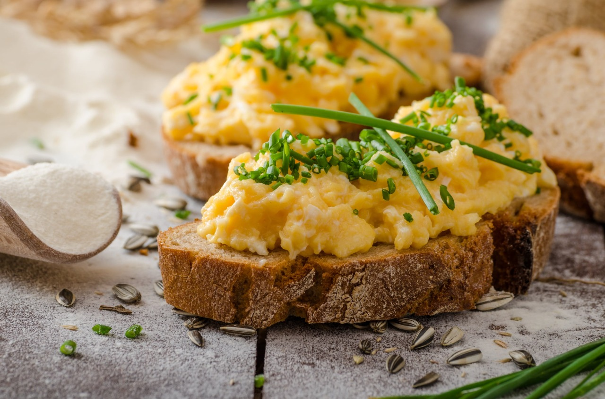
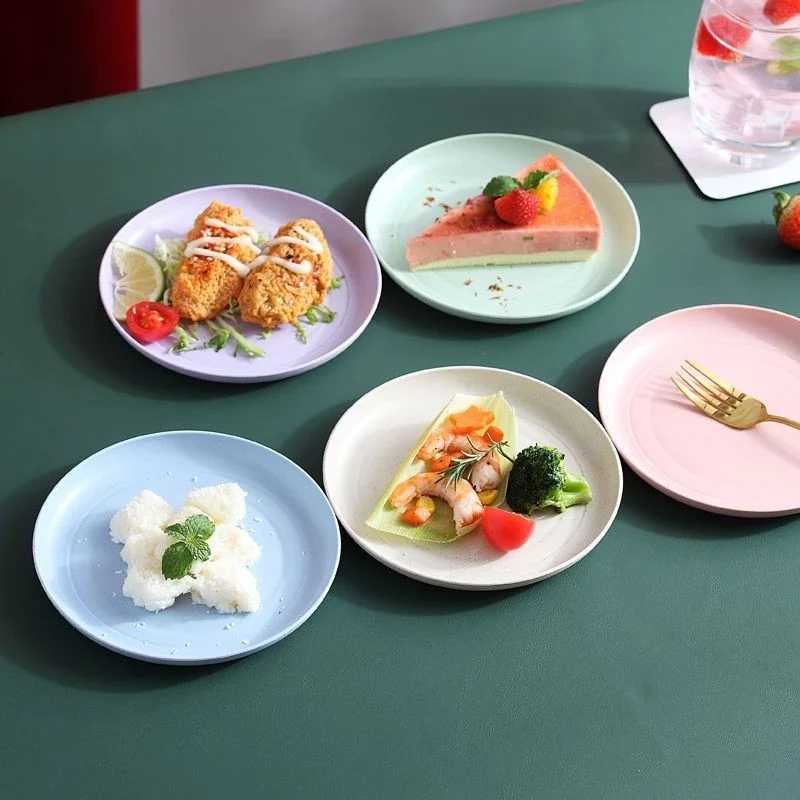
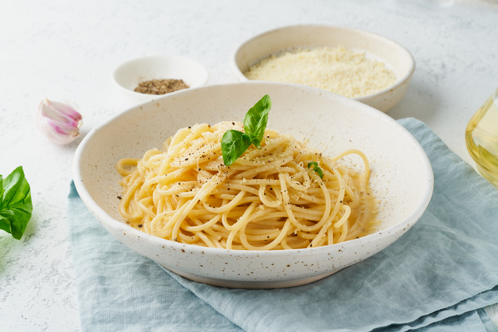
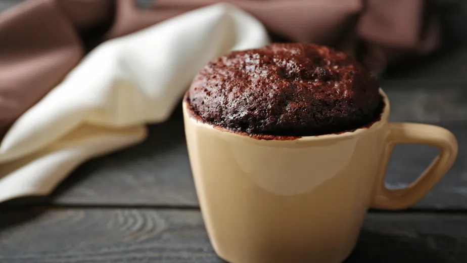

Ovos mexidos cremosos
O segredo é o fogo baixo e mexer devagar.
Cada receita mostra o tempo de preparo logo de cara. Escolha, abra e cozinhe.
Ver todas as receitas
Três jeitos de resolver a fome em poucos minutos.

O segredo é o fogo baixo e mexer devagar.

O clássico de geladeira vazia, pronto no tempo de ferver a água.

Sobremesa no micro-ondas, direto na caneca.